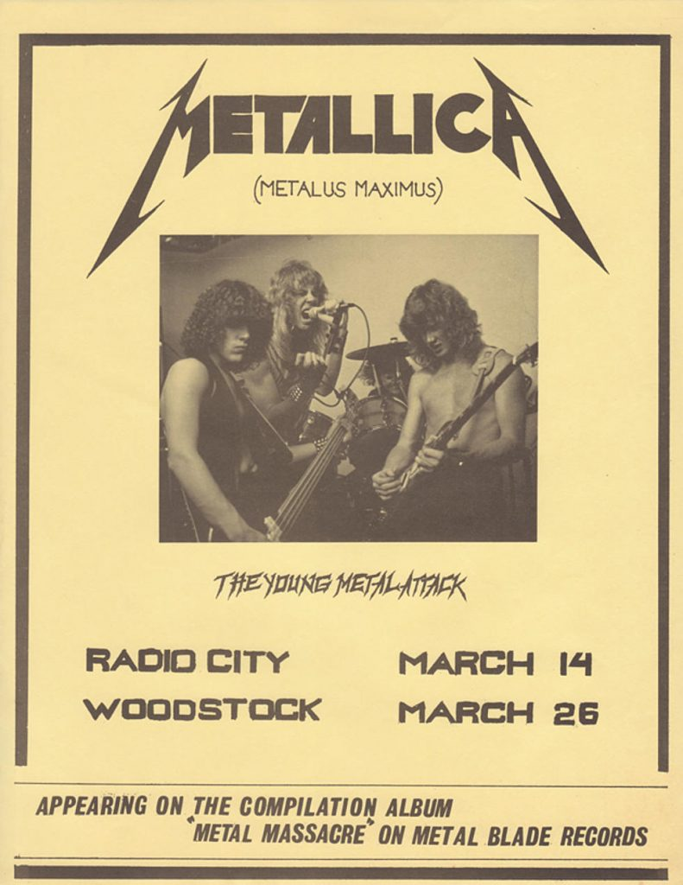
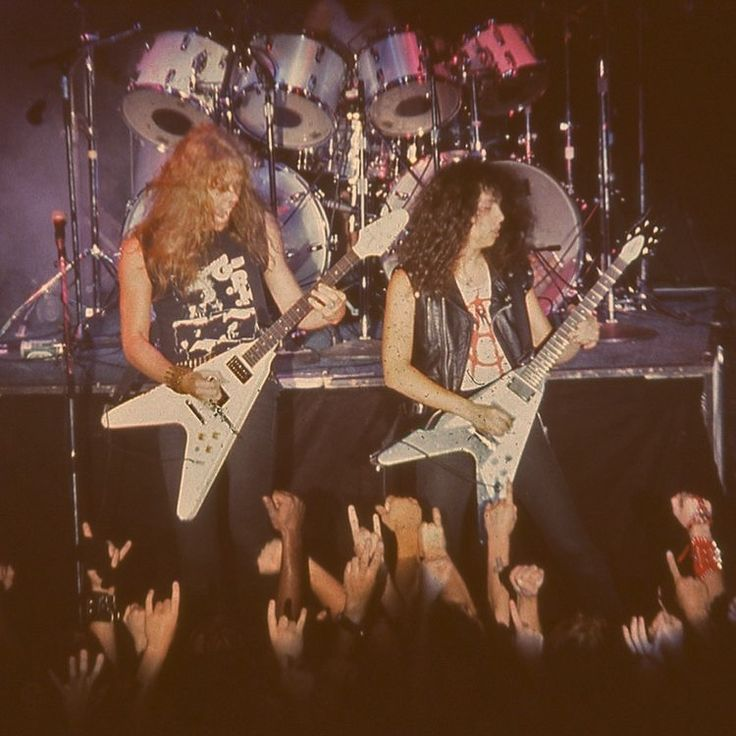

Története
A Metallica története 1981-ben kezdődött, amikor a dobos Lars Ulrich és a gitáros-énekes James Hetfield Los Angelesben úgy döntöttek, hogy közösen alapítanak zenekart. Céljuk az volt, hogy a punk zene nyers erejét és a heavy metal súlyát egyedi módon ötvözzék. Ehhez csatlakozott Kirk Hammett szólógitáros, majd Cliff Burton basszusgitáros, akinek technikája és zenei kreativitása kulcsszerepet játszott a banda korai hangzásának kialakításában.
Az első albumok – Kill 'Em All (1983) és Ride the Lightning (1984) – gyorsan kiemelték őket a thrash metal színtér élvonalába. A banda energikus stílusa és komoly társadalmi témákat boncolgató dalszövegei egyre nagyobb rajongótábort hoztak nekik. Az igazi áttörést azonban a Master of Puppets (1986) hozta meg, amely máig a heavy metal műfaj egyik legikonikusabb albuma. Ez az album mélyebb, komplexebb témákat tár fel: az élet és halál kérdéseit, a függőséget és az emberi küzdelmeket.
1986-ban azonban a zenekart tragédia sújtotta: a banda európai turnéja során a buszuk Svédországban megcsúszott és felborult. A baleset következtében Cliff Burton, a banda kiemelkedő tehetségű basszusgitárosa, életét vesztette. Cliff halála mélyen megrázta a zenekart, és kérdésessé tette a Metallica jövőjét. Végül azonban úgy döntöttek, hogy folytatják a közös zenélést, Burton emlékére és a rajongókért. 1987-ben új taggal, Jason Newsteddel a basszusgitáron folytatták útjukat.
A következő albumokkal, különösen az 1991-es Black Album megjelenésével, a Metallica a mainstream közönség körében is hatalmas sikereket ért el. Olyan dalokkal, mint a Enter Sandman és Nothing Else Matters, a banda több millió új rajongót szerzett világszerte. A Black Album azóta is minden idők egyik legsikeresebb metal albuma.
Az 1990-es évek azonban új kihívásokat hoztak. A feszültségek és a folyamatos turnék okozta nyomás mindannyiukra hatással voltak. 2001-ben Jason Newsted elhagyta a zenekart, amitől még bizonytalanabbá vált a banda jövője. Az ekkor készülő St. Anger album rögzítése során Hetfield hosszabb rehabilitációs időszakra vonult alkoholproblémái miatt. Bár sok nehézséget éltek át, mindez végül új erőt adott nekik, és folytatták a zenélést.
2003-ban a Metallica Robert Trujillot fogadta basszusgitárosként, akinek energiája és kreativitása új lendületet adott a zenekarnak. Azóta is megállíthatatlanul turnéznak és készítenek új albumokat, újra és újra bizonyítva, hogy képesek alkalmazkodni és megújulni.
A Metallica története nem csak a sikerekről szól – hanem kitartásról, veszteségekről és újrakezdésekről is. Ők nem csak egy metal banda, hanem egy inspiráló példa arra, hogy a legnehezebb helyzetekből is lehet új erőre kapni, és hogy a zene milyen mélyen képes hatni a rajongók életére.